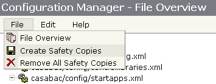
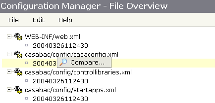
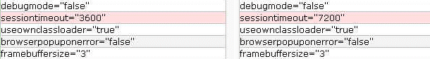
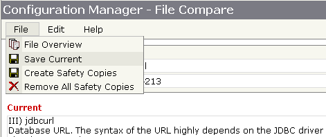

CIS Server comes along wit a set of configuration files.
Configuration Files
After installation of a CIS Server build the files contain the default configuration settings. Typically you change one or more settings over time (e.g. you change parameter session timeout in file cisconfig). Problem: you loose this changes if you (re-)install a CIS Server build over the existing installation.
Up to release 2.5 there was no secure (re-)installation over an existing installation. The standard work around: you did not (re-)install a CIS Server build over an existing installation. The new build was installed into a separate directory with a certain take over procedure (copy/ paste) of the new resources into the existing installation. With that procedure two new problems were coming up:
The Configuration Manager is a tool to ensure a secure upgrade of an existing CIS Server installation. Use the Configuration Manager to directly install a new build over an existing installation. We recommend making you familiar with this upgrade procedure on a dummy installation first. Please follow the following instruction closely:
Before installation of the new build create a safety copy of each configuration file. Use menu item "File -> Create Safety Copies" within the drop down menu inside the page header.

Create Safety Copies
The name of a safety copy is built out of the name of the origin file plus an additional extension (timestamp of creation). The safety copy is stored within the directory of the origin file. The File Overview Screen will show the new copies at once. Shutdown your application server.
Extract the new build over the existing installation. Your config files are
replaced by the CIS ones. The safety copies will still exist.
For each configuration file check if there are differences between the current file and the safety copy. If there are differences: the safety copy contains your settings - the current file contains the CIS ones. Now take over your settings into the current configuration file (file merge). The Configuration Manager supports this step (certainly you can use your own file merge tool). Within the File Overview click the safety copy with the right mouse button. A popup menu appears.

Switch to File Compare Screen
Select "Compare" to switch into the File Compare Screen. At the left hand you see the current file - at the right hand the safety copy. To see differences click button "View Differences" at the bottom of the page. A file diff popup appears.

File Diff Popup
The file diff popup just highlights differences (you see the default session timeout is 1 hour, your old configuration was 2 hours). To take over your settings close the popup. The current file content (left hand) is changeable. Take over your settings (change value to back to 7200) and save.

Save Current Configuration File